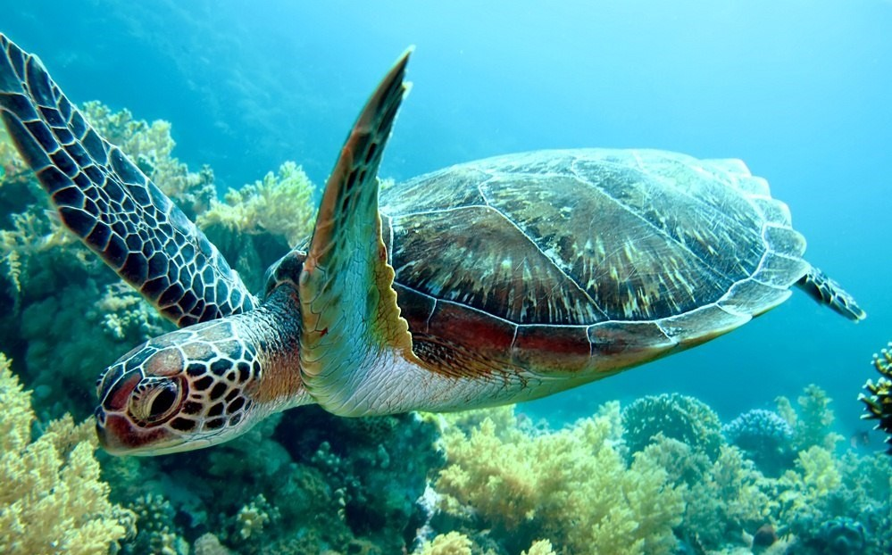
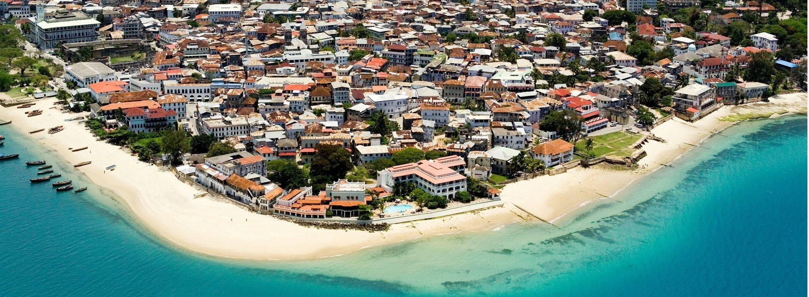

Zanzibar has some of the best snorkeling locations in the world. The Zanzibar archipelago is surrounded by coral reefs, hidden
in the sparkling blue waters of the Indian Ocean. The reef around the island boasts various fish, coral, and even tortoises.

Deep Sea Fishing
Zanzibar has some of Africa’s best deep sea fishing grounds. The channel between Zanzibar and Pemba in particular, is an internationally
renowned site, with large schools of Barracuda, Wahoo, Kingfish and Giant Travelli in the area all year round!
Tour Stone Town
The historic Stone Town of Zanzibar is a UNESCO World Heritage Site. There is much to explore in this old city: from the Darajani Town Market
to the former Slave Market, from the Forodhani Gardens to the House of Wonders, and from the Sultan Palace to the Old Fort.

Lounging on the Beach
No trip to Zanzibar would be complete without a few days swimming and tanning in some of the best coastline in the world. This small and idyllic
island paradise is surrounded by whites sand beaches and swaying palm trees. There are over 6 beautiful beaches to choose from and you can't go wrong!